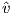
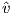
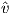
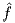
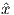
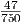

Solution:

With the initial costs, supplies, and demands as shown, the optimal solution is x(s1,t1) = 1, x(s2,t2) = 1, x(t1,t2) = 0, with total cost 0.
Now reduce the supply at s2 to zero and the demand at t1 to zero. The new optimal solution is x(s1,t1) = 1, x(s2,t2) = 0, x(t1,t2) = 1, with total cost 1.
This corresponds to assuming that the k scenarios are equally likely, and that they give the whole
set of possible scenarios. Let  k* be an optimal solution to this problem. Show that the expected
value of  k* is no larger than v*.
k* be an optimal solution to this problem. Show that the expected
value of  k* is no larger than v*.
Solution:
Note that  k*≤ k(x) ∀x ∈ X, so we have:
Informally, we are tuning k* to a subset of scenarios, with no concern for the omitted scenarios, so we should be able to do a little better in expectation.
(In the notation of Question 2, we have f(x) = -∑ s∈Sps(∑ i=14risxi - 1).)
Assume we have sampled the following scenarios, which are equally likely:
| s | r1s | r2s | r3s | r4s |
| 1 | 1.10 | 1.22 | 1.07 | 1.03 |
| 2 | 1.30 | 1.20 | 1.02 | 1.03 |
| 3 | 0.75 | 0.80 | 1.11 | 1.05 |
Use the approximation of Question 2 to derive an expected lower bound on the optimal value
of (SP) over all possible scenarios, using AMPL or otherwise. Show that the optimal solution is
 * = (0.2,0.35,0.35,0.1) with the given three scenarios.
* = (0.2,0.35,0.35,0.1) with the given three scenarios.
Solution:
The AMPL model and data file are online, as is the output. The optimal value is - (≈-0.0626667), with the optimal solution as given. Thus, our expected upper bound on returns obtained using these three scenarios is ≈ 6.267%.
where e denotes the vector of ones. Since the number of possible tours is very large, a column generation approach is used.
Let n = 4. Assume the cost ct of a tour is given by the sum of the edge lengths in the tour, and the edge lengths are as follows:
| city | 0 | 1 | 2 | 3 | 4 |
| 0 | – | 4 | 7 | 9 | 4 |
| 1 | 4 | – | 4 | 6 | 8 |
| 2 | 7 | 4 | – | 7 | 5 |
| 3 | 9 | 6 | 7 | – | 7 |
| 4 | 4 | 8 | 5 | 7 | – |
Let the current dual solution be y = (5,6,8,7)T . No tour is allowed to visit more than three cities (plus the base city). Show that the current dual solution to (CP) is not optimal. How can the solution be improved?
Solution:
The dual problem is
The valid tour 0 - 1 - 2 - 4 - 0 has ct = 17. Further, At = (1,1,0,1)T , so (at)T y = 18 > ct. Thus, the given y is not dual feasible, and the given tour has a negative reduced cost. The constraint
can be added to the dual problem.
where g,h ∈ IRn are nonnegative vectors of parameters. How does this change the dual problem? What benefit do you think this might have?
Solution:
The dual problem to (CPP) is
If any component yj is greater than the corresponding component gj, a penalty is paid. This serves to stabilize the set of dual solutions, reducing some of the oscillations that are sometimes seen in column generation methods.